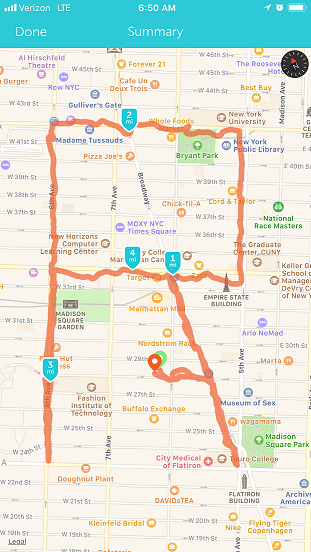

Was honored to speak at this years 2018 New York R Conference hosted by Lander Analytics and Work-Bench. Jared Lander sure knows how to host a good party, I mean, conference.
My Slides are available, and you can contact me at dusty.s.turner@gmail.com
Here is the youtube link to the video:
Oh, and I got to go for a little run before the conference!
